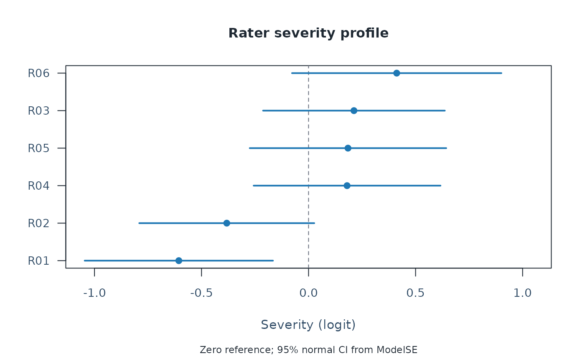

Plot per-rater severity ranking with confidence interval whiskers
Source:R/api-plotting-extras.R
plot_rater_severity_profile.RdRanks the levels of a chosen rater facet by estimated severity and
draws each level as a horizontal CI whisker around the point
estimate. Optional descriptive bands mark absolute distances of 0.5
and 1.0 logit from zero; they are display aids, not calibration rules.
Usage
plot_rater_severity_profile(
fit,
diagnostics = NULL,
facet = "Rater",
ci_level = 0.95,
show_bands = TRUE,
preset = c("standard", "publication", "compact", "monochrome"),
draw = TRUE
)Arguments
- fit
An
mfrm_fitfromfit_mfrm().- diagnostics
Optional
diagnose_mfrm()output. When omitted,diagnose_mfrm(fit, residual_pca = "none")is run internally.- facet
Facet name to plot (default
"Rater"). Any non-Person facet name is accepted.- ci_level
Confidence level used for the whiskers (default
0.95). Bounds use+/- z * ModelSE.- show_bands
Logical. When
TRUE(default) draw shaded+/-0.5and+/-1.0logit guide bands and describe them in the subtitle and legend. Set toFALSEto omit both bands and their labels.- preset
Visual preset.
- draw
If
TRUE, draw with base graphics.
Value
An mfrm_plot_data object. Its data$data table contains
columns Level, Estimate, SE, CI_Lower, CI_Upper, and Band.
The enclosing data list retains the facet, confidence level and plot
annotations; keep these with the table when reporting the results.
Fit readiness and interpretation notes are retained; restricted fits
are labeled REVIEW ONLY in the title.
Interpreting output
Zero is the sum-to-zero reference for the default centered facet; describe
any different constraints or anchors used in the fit. With the default
negative facet orientation, higher estimates mean stricter scoring.
The optional bands and the legacy Band labels (gentle, moderate,
strict) describe absolute magnitude, not the sign of severity, operational
interchangeability, or a need for training. Pairwise claims require the
uncertainty of the contrast; check the SE basis in the supplied diagnostics.
Examples
# \donttest{
# Load the package and example ratings
library(mfrmr)
toy <- load_mfrmr_data("example_operational")
# Fit the model
fit <- fit_mfrm(
data = toy,
person = "Person",
facets = c("Rater", "Criterion"),
score = "Score",
method = "MML",
model = "RSM"
)
# Compute diagnostics once for the following checks
diagnostics <- diagnose_mfrm(fit)
# Compare signed severity estimates and their intervals
severity <- plot_rater_severity_profile(
fit, diagnostics = diagnostics, show_bands = FALSE
)

severity$data$data[, c("Level", "Estimate", "SE", "CI_Lower", "CI_Upper")]
#> Level Estimate SE CI_Lower CI_Upper
#> 1 R01 -0.6059776 0.2243521 -1.04569977 -0.16625550
#> 2 R02 -0.3820356 0.2085513 -0.79078871 0.02671748
#> 3 R04 0.1799462 0.2226570 -0.25645356 0.61634590
#> 4 R05 0.1842365 0.2341852 -0.27475809 0.64323116
#> 5 R03 0.2120388 0.2165999 -0.21248930 0.63656689
#> 6 R06 0.4117917 0.2494894 -0.07719839 0.90078189
# Higher estimates mean stricter ratings with this example's default orientation
# The optional magnitude bands are omitted from this first comparison
# }